컴퓨터응용선반기능사 (2009-07-12 기출문제)
1과목: 기계재료 및 요소
1. 니켈, 크롬, 모리브덴, 구리 등을 첨가하여 재질을 개선한 것으로 노듈러 주철, 덕타일 주철 등으로 불리는 이 주철은 내마멸성, 내열성, 내석성 등이 대단히 우수하여 자동차용 주물이나 주조용 재료로 가장 많이 쓰이는 것은?
- 칠드주철
- 구상흑연주철
- 보통주철
- 펄라이트 가단주철
(정답률: 50%)

2. 벨트 전동장치의 특성에 관한 설명으로 틀린 것은?
- 회전비가 부정확하여 강력 고속전동이 곤란하다.
- 전동효율이 작아 각종 기계장치의 운전에 널리 사용하기에는 부적합하다.
- 종동축에 과대하중이 작용할 때에는 벨트와 풀리 부분이 미끄러져서 전동장치의 파손을 방지할 수 있다.
- 전동장치가 조작이 간단하고 비용이 싸다.
(정답률: 50%)
3. 42500kgfㆍ㎜의 굽힘 모멘트가 작용하는 연강 축 지름은 약 몇 ㎜인가?(단. 허용 굽힘 응력은 5kgf/㎟이다.)
- 21
- 36
- 92
- 44
(정답률: 33%)
4. 축에 키 홈을 가공하지 않고 사용하는 키(key)는?
- 성크 키
- 새들 키
- 반달 키
- 스플라인
(정답률: 59%)
5. 정지상태의 냉각수의 냉각속도를 1로 했을 때 냉각속도가 가장 빠른 것은?
- 물
- 공기
- 기름
- 소금물
(정답률: 67%)
6. 제동장치에 대한 설명으로 틀린 것은?
- 제동장치는 기계 운동부의 이탈방지 기구이다.
- 제동장치에서 가장 널리 사용되고 있는 것은 마찰 브레이크이다.
- 용도는 일반기계, 자동차, 철도 차량 등에 널리 사용된다.
- 운전 중인 기계의 운동에너지를 흡수하여 운동 속도를 감소 및 정지시키는 장치이다.
(정답률: 70%)
7. 일반적으로 리벳작업을 하기 위한 구멍은 리벳 지름보다 몇 ㎜정도 커야 하는가?
- 0.5 ~ 1.0
- 1.0 ~ 1.5
- 2.5 ~ 5.0
- 5.0 ~ 10.0
(정답률: 58%)
8. 니들 롤러 베어링의 설명으로 틀린 것은?
- 지름은 바늘 모양의 롤러를 사용한다.
- 좁은 장소나 충격하중이 있는 곳에 사용할 수 없다.
- 내륜붙이 베어링과 내륜 없는 베어링이 있다.
- 축지름에 비하여 바깥지름이 작다.
(정답률: 57%)
9. 구리의 특성 설명으로 틀린 것은?
- 비중이 8.9 정도이며, 용융점이 1083℃ 정도이다.
- 전연성이 좋으나 가공이 용이하지 않다.
- 전기 및 열의 전도성이 우수하다.
- 아름다운 광택과 귀금속적 성질이 우수하다.
(정답률: 67%)
10. 특수강 중에서 자경성(self-hardening)이 있어 담금질성과 뜨임효과를 좋게 하며, 탄소와 결합하여 탄화물을 만들어 강에 내마멸성을 좋게 하고 내식성, 내산화성을 향상시켜 강인한 강을 만드는 것은?
- Co강
- Cr강
- Ni강
- Si강
(정답률: 53%)
11. 주로 너비가 좁고 얇은 긴 바로서 하중을 지지하는 스프링은?
- 원판 스프링
- 겹판 스프링
- 인장 코일 스프링
- 압축 코일 스프링
(정답률: 48%)
12. 한 변의 길이 12mm인 정사각형 단면 봉에 축선 방향으로 144kgf의 압축하중이 작용할 때 생기는 압 축응력 값은 몇 kgf/mm2 인가?
- 4.75
- 1.0
- 0.75
- 12.1
(정답률: 36%)
13. 면심입방격자 구조로서 전성과 연성이 우수한 금속으로 짝지어진 것은?
- 금, 크롬, 카드뮴
- 금, 알루미늄, 구리
- 금, 은, 카드뮴
- 금, 몰리브덴, 코발트
(정답률: 64%)
14. 주조용 알루미늄 합금이 아닌 것은?
- Al - Cu계 합금
- Al - Si계 합금
- Al - Mg계 합금
- 두랄루민
(정답률: 56%)
15. 금속은 전류를 흘리면 전류가 소모되는데 어떤 종류의 금속에서는 어느 일정온도에서 갑자기 전기저항이 '0' 이 되는 현상은?
- 초전도 현상
- 임계 현상
- 전기장 현상
- 자기장 현상
(정답률: 72%)
2과목: 기계제도(절삭부분)
16. 보기와 같이 대상물의 구멍, 홈 등 일부분의 모양을 도시하는 것으로 충분한 경우 사용되는 투상도는?
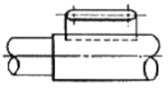
- 보조 투상도
- 국부 투상도
- 회전 투상도
- 부분 투상도
(정답률: 77%)
17. 조리 전축이
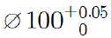
이고, 구멍은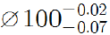
인 끼워 맞춤에서 최소 죔쇄는?- 0.02
- 0.⑤
- 0.07
- 0.12
(정답률: 52%)
18. 표면거칠기 지시방법에서 '제거가공을 허용하지 않는다' 는 것을 지시하는 것은?
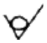
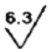
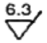
(정답률: 82%)
19. 구름 볼 베어링의 호칭번호 63⑤의 안지름은 몇 ㎜ 인가?
- 5
- 10
- 20
- 25
(정답률: 82%)
20. 기하공차의 종류 중 선의 윤곽도를 나타내는 기호는?
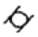
(정답률: 74%)
21. 스퍼 기어의 요목표가 보기와 같을 때, 비어 있는 모듈은 얼마인가?
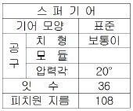
- 1.5
- 2
- 3
- 6
(정답률: 72%)
22. 구의 지름을 나타내는 치수 보조 기호는?
- C
- ø
- Sø
- t
(정답률: 70%)
23. 보기와 같은 제3각 정 투상도에서 누락된 우측면도로 가장 적합한 것은?
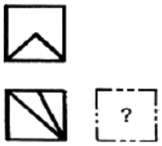
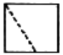
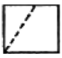
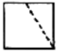
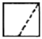
(정답률: 67%)
24. 가공에 의한 커터의 줄무늬 방향 모양이 보기와 같을 때 그 줄무늬 방향의 기호에 해당하는 것은?
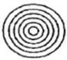
- =
- X
- R
- C
(정답률: 79%)
25. 좌우 대칭인 보기 입체도의 화살표 방향 정면도로 가장 적합한 것은?
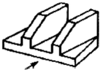
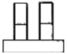
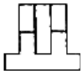
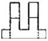
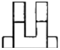
(정답률: 59%)
26. 공작물의 회전운동과 절삭공구의 직선운동에 의하여 내, 외경 및 나사가공 등을 하는 가공방법은?
- 밀링작업
- 연삭작업
- 선반작업
- 드릴작업
(정답률: 80%)
27. 일반적으로 유동형 칩이 발생되는 경우가 아닌 것은?
- 절삭깊이가 클 때
- 절삭속도가 빠를 때
- 윗면 경사각이 클 때
- 일감의 재질이 연하고 인성이 많을 때
(정답률: 57%)
28. 다음 중 센터리스 연삭기의 장점이 아닌 것은?
- 중곡의 원통을 연삭하는데 편리하다.
- 연속 작업을 할 수 있어 대량생산에 적합하다.
- 대형 중량물도 연삭할 수 있다.
- 연삭 여유가 작아도 된다.
(정답률: 68%)
29. 리머의 특징 중 옳지 않은 것은?
- 절삭날의 수가 많은 것이 좋다.
- 절삭날은 홀수보다 짝수가 유리하다.
- 떨림을 방지하기 위하여 부등 간격으로 한다.
- 자루의 테이퍼는 모스 테이퍼이다.
(정답률: 45%)
30. 선반 가공에서 벨트 풀리나 기어 등과 같은 구멍이 뚫인 원통형 소재를 가공할 때 필요한 부속장치는?
- 센터(center)
- 심봉(mandrel)
- 방진구(work rest)
- 돌리개(lathe dog)
(정답률: 44%)
3과목: 기계공작법
31. 선반에서 "주축 맞은편에 설치하여 공작물을 지지하거나 드릴 등의 공구를 고정할 때 사용한다."는 설명에 해당되는 부분은?
- 심압대
- 주축대
- 베드
- 왕복대
(정답률: 81%)
32. 숫돌바퀴에서 눈매움이나 무딤이 일어나면 절삭 상태가 나빠진다. 이와 같은 숫돌입자를 제거하고 새로운 숫돌 입자를 생성하는 작업을 무엇이라 하는가?
- 래핑
- 드레싱
- 트루잉
- 채터링
(정답률: 63%)
33. 드릴링 머신에서 작업할 수 없는 것은?
- 리밍
- 태핑
- 카운터 싱킹
- 연삭
(정답률: 67%)
34. 버니어 캘리퍼스의 측정시 주의사항 중 잘못된 것은?
- 측정시 측정면을 검사하고 본척과 부척의 0점이 일치하는가를 확인한다.
- 깨끗한 헝겊으로 닦아서 버니어가 매끄럽게 이동되도록 한다.
- 측정시 공작물을 가능한 힘있게 밀어붙여 측정한다.
- 눈금을 읽을 때는 시차를 없애기 위해 눈금으로부터 직각의 위치에서 읽는다.
(정답률: 87%)
35. 산화알루미늄(Al2O3) 분말을 주성분으로 마그네슘(Mg), 규소(Si) 등의 산화물과 소량의 다른 원소를 첨가하여 소결한 공구 재료는?
- 서멧
- 다이아몬드
- 스텔라이트
- 세라믹
(정답률: 54%)
36. 선반에서 나사가공시 주축 1회전 당 공구 이동량의 기준이 되는 것은?
- 리드
- 나사산의 높이
- 나사 유효경
- 나사골의 높이
(정답률: 81%)
37. 나사의 유효지름 측정방법에 해당하지 않는 것은?
- 나사마이크로미터에 의한 유효지름 측정 방법
- 삼침법에 의한 유효지름 측정 방법
- 공구현미경에 의한 유효지름 측정 방법
- 사인바에 의한 유효지름 측정 방법
(정답률: 66%)
38. 밀링 머신에서 육면체 공작물의 고정 방법으로 가장 널리 사용되는 것은?
- 척 사용
- 바이스 사용
- 콜릿 사용
- 어뎁터 사용
(정답률: 55%)
39. 밀링 가공에서 일감의 절삭 속도가 62.8m/min이고 일감의 지름이 20㎜이면 회전수는 약 몇 rpm인가?(단, 원주율 π=3.14로 한다.)
- 100
- 500
- 1000
- 2000
(정답률: 60%)
40. 기계가공에서 절삭성능을 높이기 위하여 절삭유를 사용한다. 절삭유의 사용 목적으로 틀린 것은?
- 절삭공구의 절삭온도를 저하시켜 공구의 경도를 유지 시킨다.
- 절삭속도를 높일 수 있어 공구수명을 연장시키는 효과가 있다.
- 절삭 열을 제거하여 가공물의 변형을 감소시키고, 치수 정밀도를 높여 준다.
- 냉각성과 윤활성이 좋고, 기계적 마모를 크게 한다.
(정답률: 70%)
4과목: CNC공작법 및 안전관리
41. 수평밀링머신의 플레인 커터 작업에서 하향 절삭과 비교한 상향 절삭의 특징으로 틀린 것은?
- 커터의 수명이 짧다.
- 이송기구의 백래시가 제거된다.
- 절삭열에 의한 치수 정밀도의 변화가 적다.
- 절삭된 칩이 가공된 면 위에 쌓인다.
(정답률: 50%)
42. 연마제를 가공액과 혼합한 것을 압축공기를 이용하여 가공물의 표면에 분사시켜 매끈한 다음면을 얻는 가공법은?
- 슈퍼 피니싱
- 액체 호닝
- 습식 래핑
- 전해 연마
(정답률: 74%)
43. 다음 그림을 보고 판단할 수 있는 안전사고의 형태는 무엇인가?
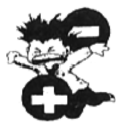
- 비례
- 얽힘
- 전기화재
- 감전
(정답률: 79%)
44. 기계의 기준점인 기계원점을 기준으로 정한 좌표계이며, 기계제작자가 미리 파리미터에 의해 정하는 좌표계는?
- 공작물 좌표계
- 상대 좌표계
- 기계 좌표계
- 증분 좌표계
(정답률: 71%)
45. 주축의 속도가 500rpm으로 회전하고 있다. 바이트가 홈 가공을 하고 5회전을 드월(G04) 하려고 한다면 프로그램에서 몇 초간 바이트의 이동을 멈추게 해야 하는가?
- 0.3초
- 0.4초
- 0.5초
- 0.6초
(정답률: 26%)
46. 다음 도면을 보고 CNC 프로그램을 완성시키고자 한다. ( ) 속에 들어갈 값으로 옳은 것은?(오류 신고가 접수된 문제입니다. 반드시 정답과 해설을 확인하시기 바랍니다.)
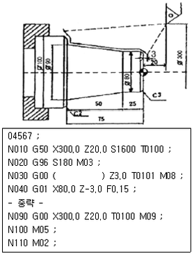
- X68.0
- X74.0
- X77.0
- X80.0
(정답률: 21%)
47. 수치제어 방식 중 공구의 위치만 이동시키는 제어 방식으로 정보처리 회로가 매우 간단하여 펀치 프레서, 스폿용접 등에 사용되는 제어는?
- 위치결정 제어
- 윤곽적삭 제어
- 위치결정 직선절삭제어
- 직선절삭 제어
(정답률: 62%)
48. 공구보정(OFFSET) 화면에서 가상 인선반경 보정을 수행하기 위하여 노즈 반경을 입력하는 곳은?
- X
- Z
- R
- T
(정답률: 51%)
49. 다음 중 위급할 때 사용하는 비상 정지 스위치는?
- Optional Stop
- Cycle Start
- Emergency Stop
- Reset
(정답률: 73%)
50. 아래 도면에서 P1에서 P2까지 가공하는 머시닝센터 프로그램은?
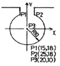
- G90 G03 X25.0 Y18.0 R-10.0 F100 ;
- G90 G03 X25.0 Y18.0 R10.0 F100 ;
- G90 G03 X25.0 Y18.0 I8.0 J5.0 F100 ;
- G90 G03 X25.0 Y18.0 I-5.0 J-8.0 F100 ;
(정답률: 37%)
51. 다음 중 CNC선반의 가공프로그램에서 보조프로그램의 종료를 나타내는 보조기능은?
- M02
- M30
- M98
- M99
(정답률: 50%)
52. 다음 CNC 선반의 어드레스 중 소수점을 사용할 수 있는 것만으로 짝지어진 것은?
- X, Z, R, I, K
- X, Z, P, D, K
- I, K, P, Z, M
- Z, K, R, P, U
(정답률: 66%)
53. CNC선반의 가공프로그램 작성에 있어서 복합형 고정 사이클을 사용한다면 그 복합형 고정 사이클 중 G70 기능을 이용하여 정삭 가공을 할 수 없는 것은?
- G71
- G72
- G73
- G74
(정답률: 49%)
54. CAD/CAM의 필요성이 증대되는 요인으로 적절치 않은 것은?
- 소비자 요구의 다양화
- 신제품 개발 경쟁 치열
- 제품 라이프 사이클(Life Cycle)의 단축
- 소품종 다량생산
(정답률: 47%)
55. 머시닝센터에서 G00 G43 Z10. h12 ; 블록으로 공구 길이 보정을 하여 공작물을 가공하고 측정하였더니 도면의 치수보다 Z값이 0.5㎜ 작았다. 길이 보정 번호 H12의 보정값을 얼마로 수정하여 가공해야 하는가?(단, H12의 기존의 보정값은 100.0 이 입력된 상태이다.)
- 99.⑤
- 99.5
- 100.⑤
- 100.5
(정답률: 45%)
56. CNC선반에서 나사 가공시 이송속도(F코드)에 무엇을 지령해야 하는가?
- 줄수
- 피치
- 리드
- 호칭
(정답률: 65%)
57. 머시닝센터의 특징과 관계가 없는 것은?
- 소형 부품의 경우 테이블에 여러 개 고정하여 연속 작업을 할 수 있다.
- 공구가 자동으로 교환되므로 공구교환 시간을 줄일 수 있다.
- 주축회전수의 제어범위가 크고 무단변속이 가능하므로 가공에 요구되는 회전수에 유연하게 대처할 수 있다.
- 주로 엔드밀을 사용하여 작업하므로 특수 치공구의 제작이 필요하다.
(정답률: 43%)
58. CNC선반에서 원호가공을 하는데 적합하지 않는 WORD는?
- R8
- I-3. K-5.
- G02
- R-8
(정답률: 46%)
59. 머시닝센터 작업시 안전 및 유의 사항으로 틀린 것은?
- 작업 전에 일상점검을 하고 부족한 오일을 보충한다.
- 절삭 공구 및 가공물은 정확하고 견고하게 고정한다.
- 작업 전에 컨트롤러에 먼지가 없도록 압축공기로 청소한다.
- 절삭 중에 칩이나 절삭유가 튀어나오지 않도록 문을 닫고 작업한다.
(정답률: 67%)
60. 도면상의 프로그램 원점에 대한 설명으로 틀린 것은?
- 일감에서 임의 위치를 기준으로 설정한 것이다.
- 일감에서는 기계 원점이라고도 한다.
- 중심선 상의 편리한 위치에 설정할 수 있다.
- 보통 X축은 주축의 중심에서 Z축은 일감의 끝단에 위치시킬 수 있다.
(정답률: 37%)